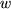
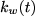
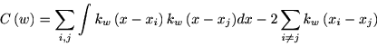
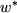
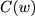

SULAB: Kernel Bandwidth Optimization for Spike Rate Estimation
This page was created by Hideaki Shimazaki in collaboration with Shigeru Shinomoto based on the theory published in Journal of Computational Neuroscience
2010.
Web Application for Kernel Bandwidth Optimization (Ver. 0.4)
This web application calculates the optimal kernel bandwidth for the data you post.
I. Let be your data. Let the kernel with bandwidth  be .
II.Compute a formula,

III.Find  that minimizes  .
The present algorithm speeds up the computation by neglecting the
unnecessary parts outside the range of ± 5 w of the Gaussian kernel in
the double summation II (see Shinomoto S., Estimating the firing rate.
in Analysis of Parallel Spike Train Data. eds. S. Gruen and S. Rotter,
(Springer, New York, 2010)).
Original paper
Shimazaki H. and Shinomoto S., Kernel Bandwidth Optimization in Spike Rate Estimation. Journal of Computational Neuroscience (2010) 29:171-182. [PDF, LINK]